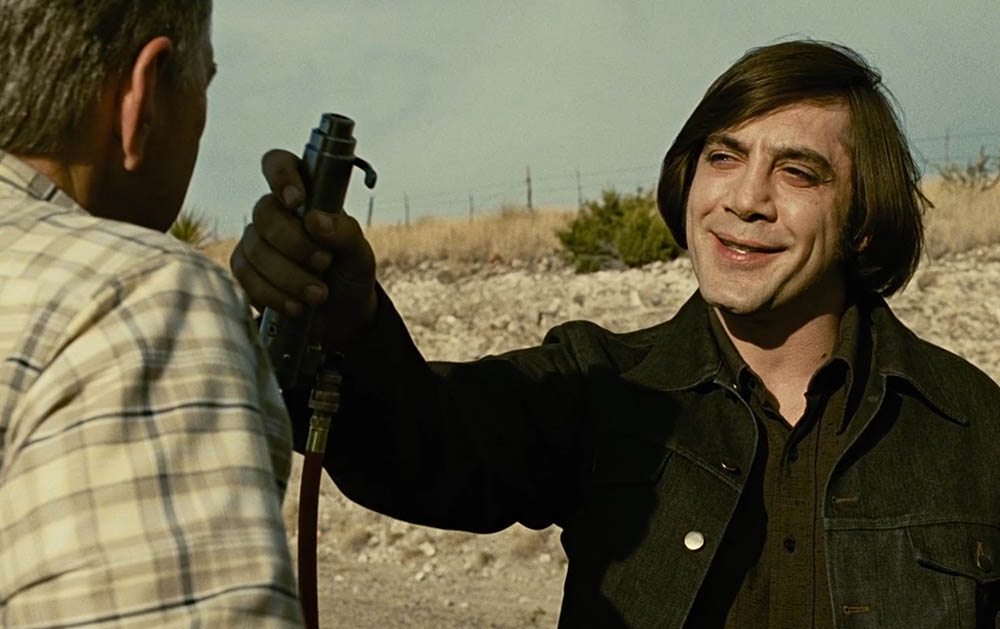
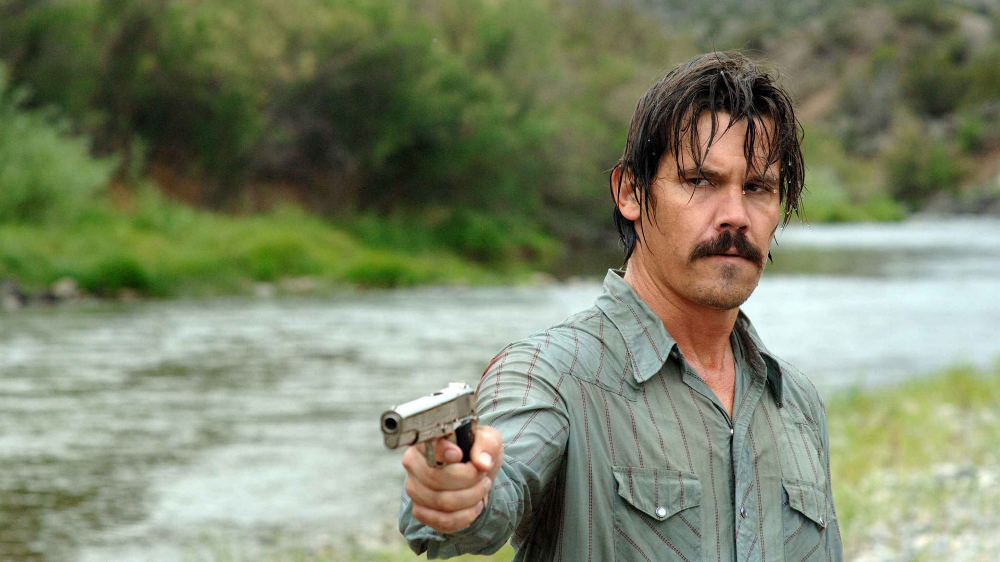
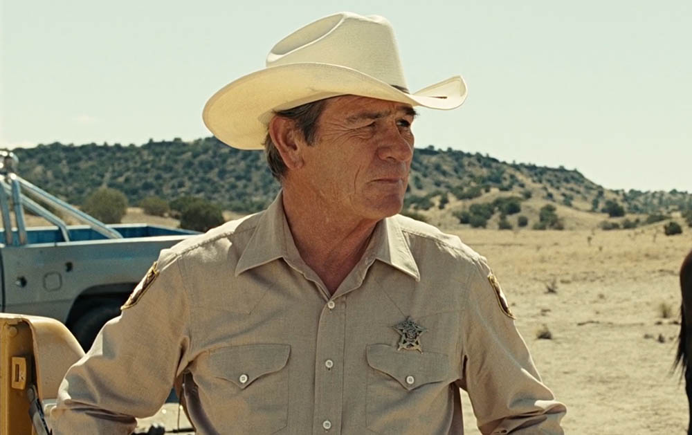
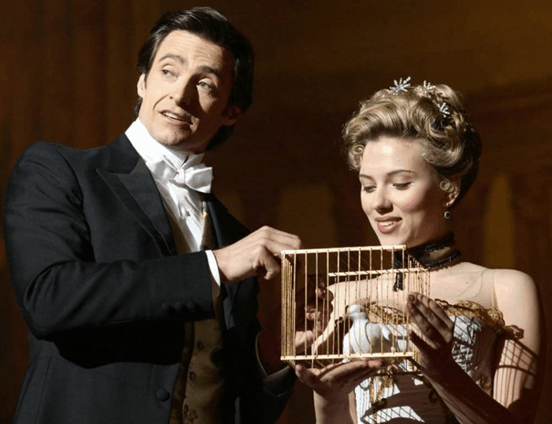
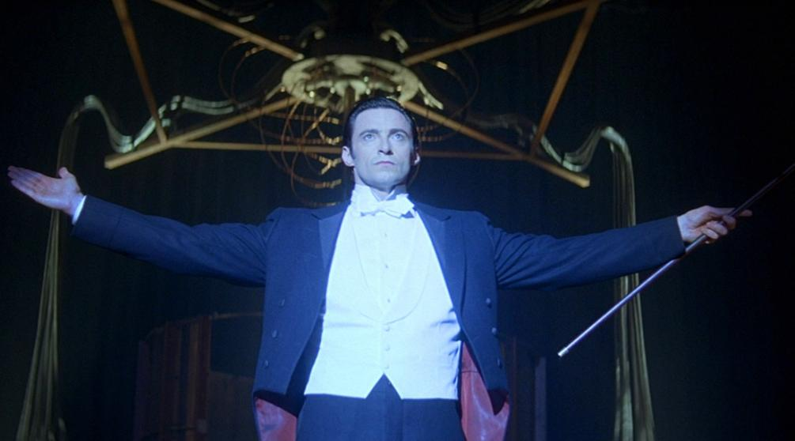
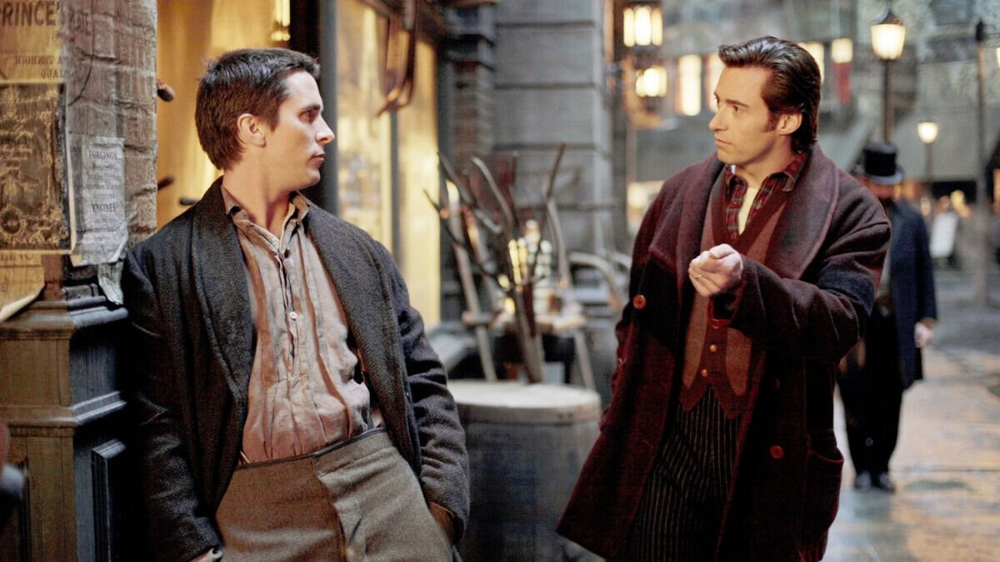
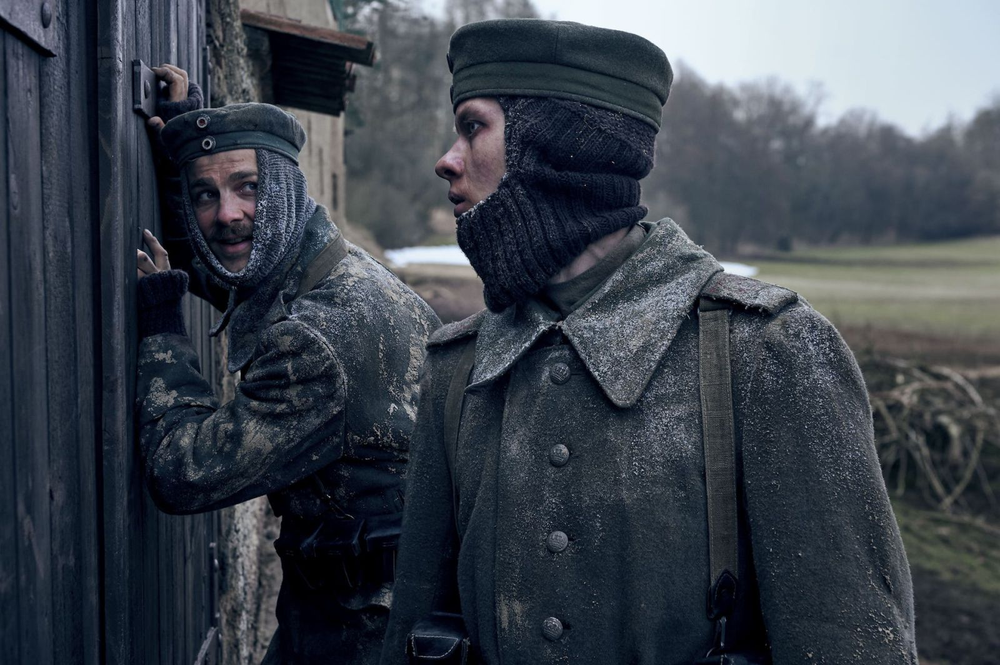
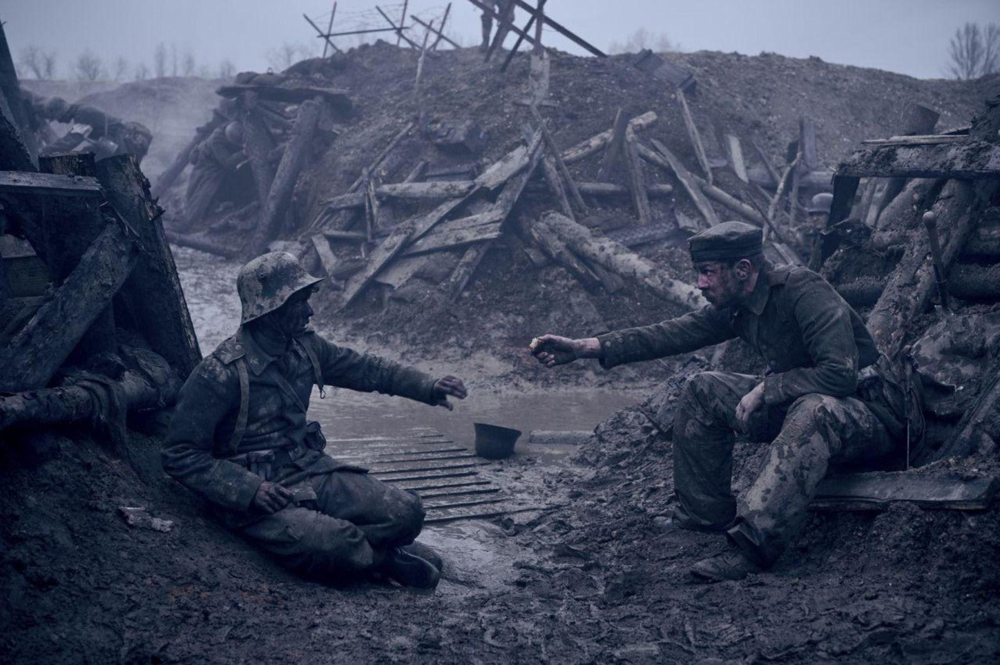
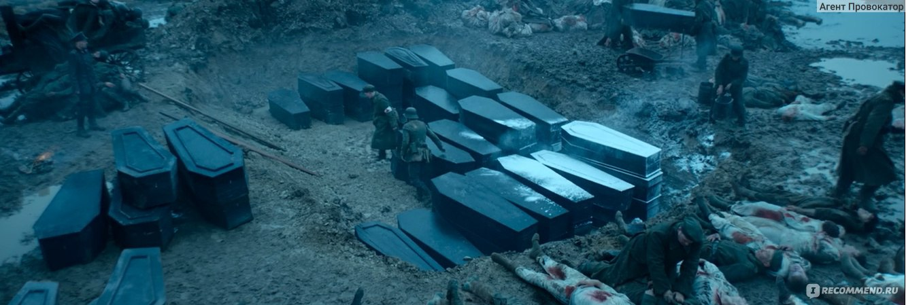

Мои любимые фильмы
Старикам тут не место
Краткое содержание фильма
Когда обычный человек Ллевелин Мосс случайно находит деньги, принадлежащие наркокартелю, он оказывается втянут в опасную игру, где против него выступает жестокий убийца Антон Чигур. По мере их противостояния, шериф Белл пытается разрулить ситуацию, но мир вокруг него становится всё более хаотичным и непредсказуемым.
Кадры из фильма



О фильме
| Год: |
2007 |
| Страна: |
США |
| Жанр: |
Триллер, криминал, драма |
| Режиссеры: |
Джоэл и Итан Коэны |
Престиж
Краткое содержание фильма
История о двух фокусниках-конкурентах, которые соревнуются в мастерстве создания лучших трюков. Постепенно их соперничество перерастает в настоящую войну, где победа требует невозможного. С каждым шагом они готовы жертвовать всё большим, чтобы сохранить свои секреты и уничтожить друг друга.
Кадры из фильма



О фильме
| Год: |
2006 |
| Страна: |
США, Великобритания |
| Жанр: |
Драма, триллер, фантастика |
| Режиссер: |
Кристофер Нолан |
На западном фронте без перемен
Краткое содержание фильма
Фильм рассказывает историю молодых солдат, которые добровольно отправляются на фронт во время Первой мировой войны. Их романтические иллюзии о героизме быстро рассеиваются, когда они сталкиваются с жестокостью войны, теряют своих товарищей и переживают невыразимые ужасы на полях сражений.
Кадры из фильма



О фильме
| Год: |
2022 |
| Страна: |
Германия |
| Жанр: |
Военный, драма |
| Режиссер: |
Эдвард Бергер |